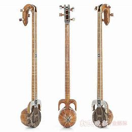
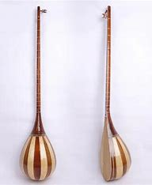
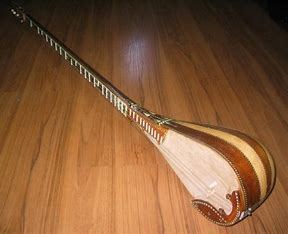
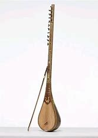

刀郎文化
刀郎文化是新疆维吾尔自治区麦盖提县独特的文化瑰宝，融合了维吾尔族传统音乐、舞蹈和诗歌艺术。作为刀郎文化的发源地，麦盖提县保存着最原始、最纯正的刀郎艺术形式。
刀郎文化以其独特的音乐风格和舞蹈形式闻名，特别是十二木卡姆艺术，它是维吾尔族传统音乐的最高形式，被联合国教科文组织列为人类非物质文化遗产。
十二木卡姆乐器

热瓦普
维吾尔族传统弹拨乐器，音色明亮，是木卡姆音乐中的重要乐器。

都塔尔
双弦弹拨乐器，音色浑厚，常用于伴奏和独奏。

弹布尔
长颈弹拨乐器，音域宽广，是木卡姆音乐中的主要乐器之一。

萨塔尔
弓弦乐器，音色悠扬，常用于演奏木卡姆音乐的旋律部分。